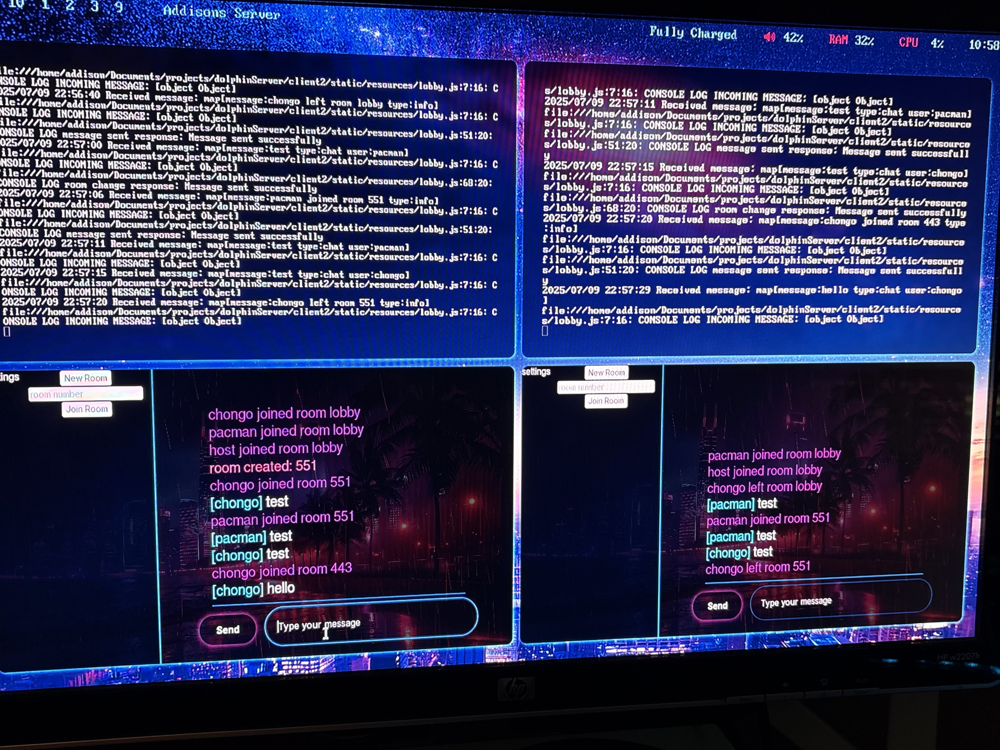

Starting in the summer of 2025, I have been working on a server and cross-platform client that acts like a hub for me and my friends. The server has a chatroom and allows users to play Wii Games with each other in our respective cities and states. For thoes of you that care, here is a technical aspect of the entire server:
The server runs on a repurposed laptop that has Arch Linux installed. The server uses a Dolphin Emulator to play Wii Games, and saves the X11 output. The X11 output is then forwarded via WebRTC to the clients. A custom python script emulates a controller, and feeds input from the clients to the Dolphin Server. For communication, a custom Go program manages a WebSocket Secure (wss) connection between the client and server. The server also handles it's own signaling via another custom Go program. This signaling program manages all communication and "rooms". The server is publicly available via DuckDNS and a Caddy Reverse-Proxy, and both the Router and Server have a strong firewall with monitoring enabled. Once a room is created, a Wii game can be selected and ran with the Dolphin Emulator and streamed to the people in the room, who in turn send their controller inputs back to the server.